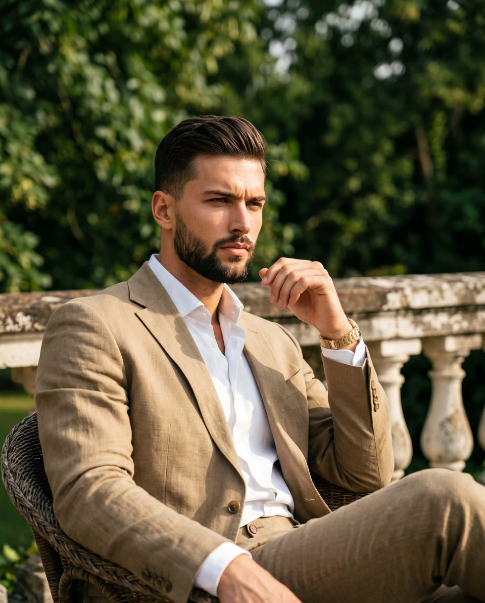

Candid medium shot: man in tan linen suit in a sunlit garden (still)
REA-031RealismNano Banana 2.1 (Gemini app)by @pictsbyai2026-10-19

Dense candid-portrait still prompt: precise pose and head angle, wardrobe texture, light catching a watch, shallow DOF, natural film grain, warm grade, 4:5.
Prompt
A cinematic, candid medium shot photograph of a rugged man in his 30s with Mediterranean features, dark textured hair with natural imperfections, and a manicured beard, captured in a serious, contemplative moment. He sits outdoors, leaning slightly back and turned at a 45-degree angle to his right (the viewer’s left) in a worn, dark brown wicker chair that is partially visible in the bottom-left foreground. He is wearing a tailored, textured tan linen suit and a partially unbuttoned, crisp white shirt. He has a serious and intense expression with slightly furrowed brows, looking away and squinting slightly into the distance with a closed, neutral mouth. His relaxed left hand is raised near his face, on his left wrist, a gold watch catches the sunlight. His right hand rests mostly out of frame. The scene is set in an outdoor garden, with the foreground and midground occupied by the man and a weathered, textured, matte warm-gray and off-white stone balustrade visible in the mid-right background. Behind him, thriving trees and dense foliage fill the background, entirely out of focus to create a lush green bokeh effect that isolates the subject. Natural, bright, and moderately directional golden sunlight hits the man from a 45-degree front-left angle, preserving highlights on his left cheek, forehead, and the shoulder of his suit, while casting deep, harsh-edged shadows on his right side (viewer's left), particularly under his collar, lapel, and the side of his face. The color palette is warm and complementary, dominated by the tan and khaki of the suit, the warm skin tones, and the deep out-of-focus greens of the foliage, contrasted by the accent of the white shirt. The photograph is shot straight on with a shallow depth of field, rendering the subject tack sharp while the background remains softly blurred, showing natural film grain and cinematic color grading that enhances the warm tones, framed in a 4:5 aspect ratio.
Our Seedance 2.5 adaptation
[ADAPTED for Seedance 2.5 by Grok Bot; not the creator's prompt. Follows the official BytePlus Seedance 2.5 prompt guide: asset binding → one-sentence summary → integer-second timeline → consistency notes → negatives.] API: duration 6, ratio adaptive (locked to the 4:5 first frame), resolution 1080p, generate_audio true. content.role: Image 1 = first_frame (the still generated from the creator's prompt). Summary: A 6-second candid moment that brings the still from Image 1 to life. A man in a tan linen suit sits in a sunlit garden, lost in thought. 0-2s: Locked-off medium shot, matching Image 1 exactly. He squints into the distance, left hand raised near his face, and sunlight glints off his gold watch. 2-4s: He slowly lowers his hand to the wicker armrest and exhales. A light breeze moves the leaves behind him. 4-6s: His eyes shift briefly toward the lens, then away again. Hold. Look: shallow depth of field, natural film grain, a warm cinematic grade, the background softly blurred. Audio: birdsong, distant cicadas, the creak of the wicker chair. No music, no subtitles.
Tags: candid portrait, linen suit, natural light, film grain, 4:5, still